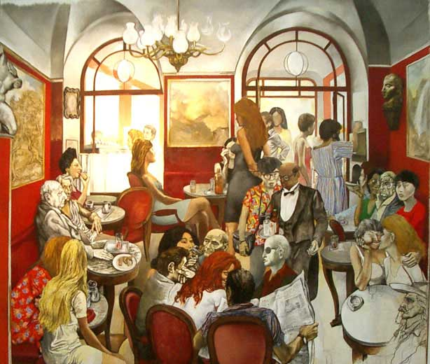
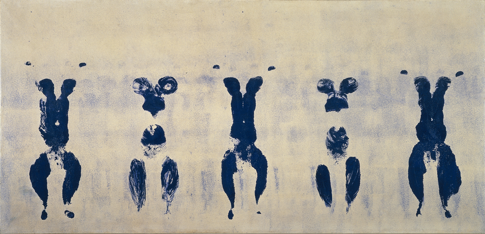

Неореализм
Неореализм (по-итальянски neorealisme – новый реализм) Художественное направление в искусстве послевоенной Италии, ярче всего проявившее себя в кинематографе и изобразительном искусстве, отчасти в литературе.
Начало этому движению положил основанный в 1946 г. «Новый фронт искусств» ("Fronte Nuovo Delle Arti"), объединивший художников-антифашистов различных направлений – от реализма до абстракционизма. Их целью было побороть пессимизм послевоенного мира и призвать вернуться к искусству, выражающему общечеловеческие ценности. В 1950 г. объединение распалось, и реалисты создали самостоятельную группировку, в которую вошли Ренато Гуттузо, Габриеле Муки, Эрнесто Треккани, Армандо Пиццинато.
В последующие годы внутри общества не угасали споры между абстракционистами — сторонниками искусства, свободного от необходимости описывать реальность, и реалистами, манифестирующими художественное выражение напряженности и противоречий настоящего времени. В 1950 году объединение, раздираемое спорами, распалось.

В начале 1960-х во Франции образовалась группа художников, в намерения которых входило доказать смерть искусства и найти новые смыслы в непосредственной вещественной реальности. Они называли себя группой Nouveau Réalisme, или New Realism — «новые реалисты», став третьей составляющей в прогрессивных культурных движениях Франции «Nouveau Roman» (литература) и «New Wave» (кинематограф). «Новые реалисты» подвергли сомнению идею о том, что искусство должно политизировать или идеализировать любой предмет.
Группа Nouveau Réalism была основана в 1960 году искусствоведом Пьером Рестани и художником Ивом Кляйном во время первой коллективной экспозиции в галерее Apollinaire в Милане. Пьер Рестани написал оригинальный манифест для группы под названием «Учредительная декларация нового реализма», провозгласив «Nouveau Réalisme — новые способы восприятия реальности». Эта совместная декларация была подписана 27 октября 1960 года в мастерской Ива Кляйна девятью художниками, в числе которых были Арман, Мартиал Райс, Пьер Рестани, Даниэль Спёрри, Жан Тэнгли, Франсуа Дюфрен, Рэймонд Хайнс, Жак де ла Виллегле. Год спустя к ним присоединились Сезар Бальдаччини, Миммо Ротелла, Ники де Сен-Фалль и Жерар Дешам. Художник-акционист Христо Явашев также поддерживал интересы объединения.

Где смотреть: Ренато Гуттузо — Дворец Кьярамонте (Палермо, Италия), фрески Диего Риверы — Президентский Дворец (Мехико, Мексика).